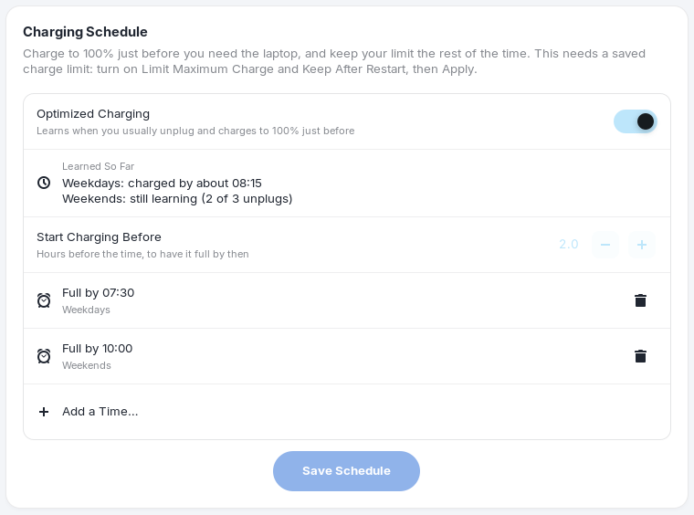
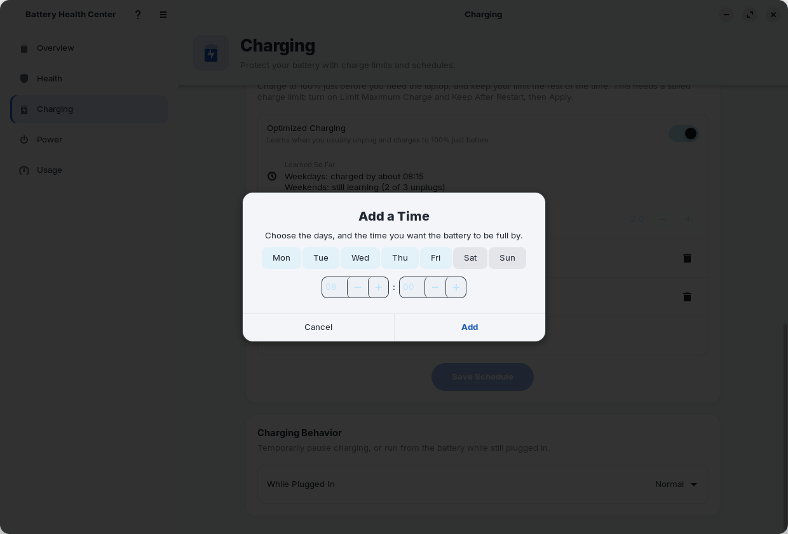

Charging schedule
Full when you need it, protected the rest of the time.
A charge limit is great until the morning you need the laptop to last all day. The charging schedule gets you both: the limit protects the battery, and shortly before you need the laptop the limit is lifted so the battery is full on time, then put back.

Ready-by times
A ready-by time is a day or group of days with the time you want the battery to be full by, for example Weekdays, 07:30.
- Choose Add a Time….
- Pick the days (Mon to Sun) and the time. At least one day must be selected.
- Choose Add. The time appears as a row such as "Full by 07:30 · Weekdays". Use the trash button on a row to remove it.
- Choose Save Schedule and enter your password once.

- Days that share a time are shown together: Every day, Weekdays, Weekends, or a list of days.
- You can have up to 14 rules.
- Rules are saved only when you choose Save Schedule, and "Schedule saved" or "Schedule removed" confirms it.
Start charging before
Start Charging Before is the lead time, in hours before each ready-by time, when the limit is lifted. The default is 2 hours; you can choose from half an hour to six hours. Pick a longer lead if your charger is slow or your battery is large.
The limit stays lifted until the battery is full, you unplug, or 30 minutes after the ready-by time, whichever comes first, so a battery that is a bit slow still finishes. Then your limit is restored.
The Charging Status card Next Scheduled Full Charge shows what will happen next, such as "Full by Mon 07:30 · starts Mon 05:30".
Optimized charging
Do not want to enter times? Turn on Optimized Charging and the app learns your routine.
- Whenever you unplug after the laptop was plugged in for at least 3 hours, the app records the time.
- When it has seen at least 3 such unplugs in the last 28 days on weekdays (or on weekends) that are within an hour and a half of each other, it uses the earlier end of that range as the ready-by time for those days.
- The Learned So Far row shows the result: "Weekdays: charged by about 08:15", or "Weekends: still learning (2 of 3 unplugs)".
Weekday and weekend habits are learned separately, so a lie-in on Saturday does not disturb your Monday. Everything stays on your computer, in a small file of unplug times.
How it works
When you choose Save Schedule, the app asks for your password once and installs the schedule where a small
systemd service can read it. That service runs as root only while a schedule exists (a systemd .path unit starts it), lifts and restores the limit
at the right moments, and goes back to sleep. It needs no password each time and does not
need the app to be running. The details are on Privacy and security.